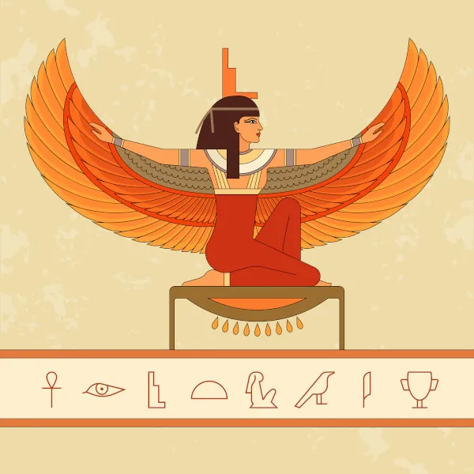
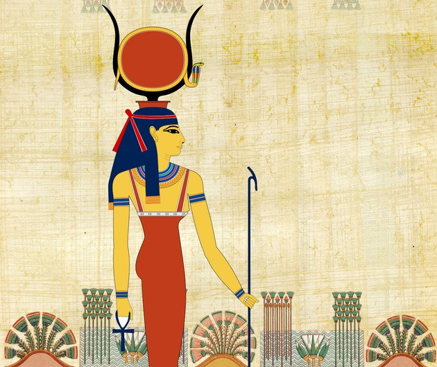
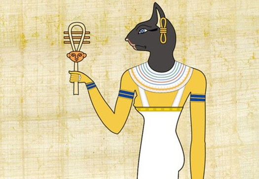
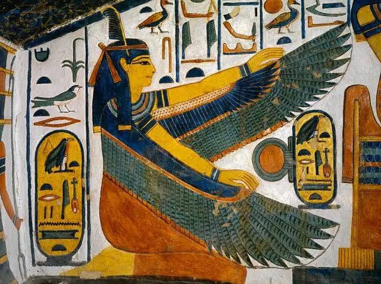

As divindades femininas egípcias são uma forma de enxergar como era a vida das mulheres na época, seus
direitos e que atividades elas podiam exercer.

Ísis, deusa da magia
A Mitologia Egípcia possui diversas deusas, com elas representando diversos aspectos do mundo.
Um exemplo é Ísis, deusa da maternidade, da magia, da cura e da proteção. Possui função importante
na mitologia ao formar o primeiro casal real com Osíris. Ela também ustilizou suas capacidades para
reviver Osíris aós o mesmo ter sido morto por Set, mas, por não conseguir recuperar o corpo inteiro
de seu esposo, Osíris não pôde voltar para o mundo dos vivos, vivendo no submundo a partir disso.
Ísis também teve um filho com Osíris, Hórus, cuja imagem está fortemente associada aos faraós
Ela possui um símbolo muito importante na sociedade daquela época, o "Tyet", também chamado de "Nó
de Ísis", um aumelto que garatiria proteção para aqueles que o portassem.
Ísis é associada ao renascimento e a fertilidade, sendo ela o exemplo ideal de mãe e esposa da
época, mostrando como as mulheres deveriam ser naquele tempo.

Hathor, deusa da alegria e do amor
Outro exemplo é Háthor, geralmente retratada como a deusa da alegria, do amor e da beleza. Era
associada a pedras e metais preciosos, como ouro, turquesa e malaquita, dessa forma recebendo o
título de padroeira dos mineiros e guardiã das minas da Península do Sinai. Era patrona das
dancçrinas e protetora dos músicos, com sua existência também associada às festas e ao álcool.
Também era tida como guia espiritual para as mulheres em suas jornadas pessoais e emocionais,
acreditando que ela poderia ajudar as mulheres também na fertilidade, na saúde, no parto e no
amor.
Uma curiosidade é que Hathor em alguns momentos acaba tomando atributos de outras deusas, sendo em
alguns momentos fortemente associada a Ísis.

Bastet, deusa protetora do lar
Bastet também é uma divindade que era associada às mulheres, sendo a protetora do lar, da vida
doméstica, dos gatos, da fertilidade e dos segredos das mulheres. Protegia o lar dos espíritos
malignos e das doenças, especialmente as mulheres e crianças. Também era retratada como guia e
ajudante dos mortos, apesar de não ser sua principal função.
bastet inicialmente era representada como uma leoa, após um bom tempo passou a ser representada como
uma gata ou uma pessoa com cabeça felina.

Ma'at, deusa da justiça
Ma'at, filha de Rá, deusa da justiça e verdade. Tinha importante participação no tribunal de Osíris,
onde que Ma'at utilizaria de uma balança para comparar o peso do coração, que representa a
consciência, ou onde ela está armazenada, com uma pena de avestruz que a deusa carrega, caso o
coração fosse mais leve que a pena, o morto poderia ir ao paraíso de Osíris, caso fosse mais pesado,
Ammit, deusarepresentada pelos animais perigosos da África, devoraria o coração e o morto
desapareceria para sempre.
Ma'at era vista como regente do cosmos e responsável pelo equilíbrio do universo. Por ser a deusa
associada à justiça, os faraós deveriam respeitar os princípios de Ma'at e fazer cultos à ela
diariamente já que acreditava que se a deusa não estivesse satisfeita, um desequilíbrio poderia
ocorrer. Como por exemplo, a cheia do rio Nilo não acontecer no tempo certo, as plantações não
dariam alimento suficiente e a população passaria fome.